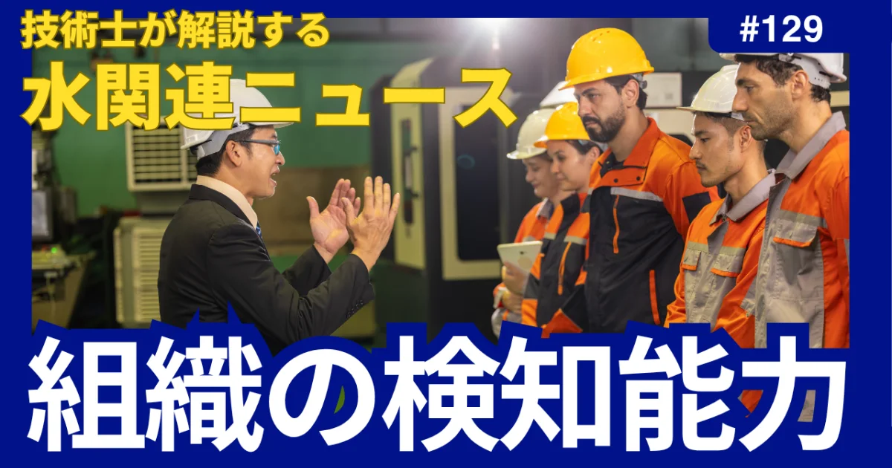
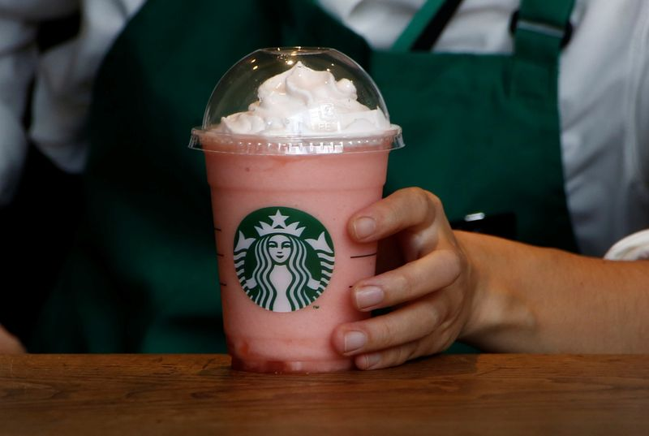
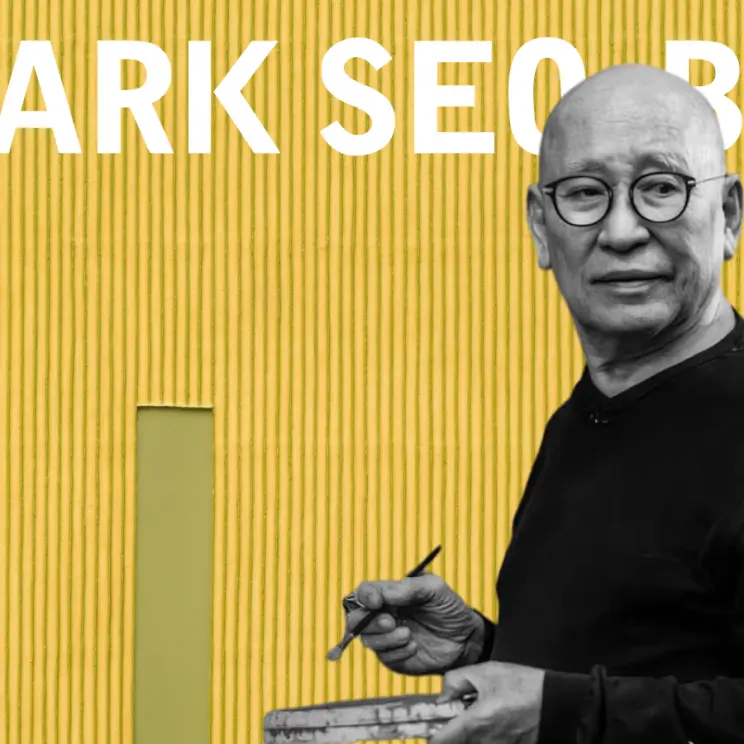

【実録】買収ブランドが急成長。「ロレアル流」の秘密
発行日時：2026-11-25 05:30:00 JST
NewsPicks原文を読む
あなたに関係ありそうな理由
会社や業務を引き継ぐとき、顧客に支持されている運用を見極める材料になる。
概要
ロレアルが2021年に買収した日本のスキンケア事業会社タカミは、2023年に買収前の約4倍の売上高に達した。NewsPicksは元社長の岡村雄嗣氏と現ブランド責任者の岩切直子氏に取材し、その背景を描く。タカミは、主力のスキンピールを約1カ月で使い切る容量にし、まず試してから定期便へ進めるように設計していた。使い始めてからの期間によって同梱物やメールの内容を変え、案内を出す時期も検証した。通販でも、店頭の美容部員のように使用後の相談や変化を見越した接客を積み上げた。
一方、通販中心のまま高級化粧品として百貨店で販路を増やすことや、中国事業の成長に組織を追いつかせることには難しさがあった。岡村氏はロレアルのラグジュアリー部門に入ることを条件に売却へ進んだ。ブランドの所有権は創業に関わった医師が持っており、ロレアルは事業会社を買収し、ブランドには長期のライセンス契約を結んだ。何を買うのかと、顧客にどの価値を届けるのかが、契約と運営の両方に表れている。
財務会計は早期に統合したが、定期便に密接に結びつくITと物流は急がなかった。製造委託先の見直しも段階的に進め、買収直後の経営体制には独立性を持たせた。岡村氏は期末の利益を約束した上で広告費を前倒しし、ロレアル側の発信チームも広告を支えた。研究開発や海外販路は買収側の力を使い、主力商品の処方と国内の定期便は維持した。英国では店頭とオンラインを組み合わせ、日本の定期便で学んだ顧客との関係の築き方を現地に合う形で生かそうとしている。
表示コメントでは、タカミの社員が共通の仕組みを求められた際も、その変更が顧客のためかを問い返した場面に関心が集まった。統合の順序に加え、現場に変更を判断する裁量があった点や、買収側にも学びが生まれた点が評価されている。岡村氏自身は買収を肯定しつつ、大企業のルールに合わせる中で失ったものもあったと振り返る。売上4倍は複数の施策が重なった一事例だ。引き継ぎに応用するなら、どの運用が継続率や顧客体験を支えているかを現場と確認し、変更の裁量と評価する指標を先に決めておきたい。統合する項目ごとに、変更で顧客との接点がどう変わるかまで確かめると、この事例を自社に当てはめやすい。
仕事や会話で使える一言
買収直後に共通化する業務と、顧客との関係を支える業務を見極めたい。
【真相】5年で6割高。マヨネーズ暴騰の意外な「真犯人」
発行日時：2026-11-25 05:30:02 JST
NewsPicks原文を読む
あなたに関係ありそうな理由
身近な食品の値上げから、原材料の使い道と調達先が家計へどう響くかをたどれる。
概要
キユーピーの450グラムのマヨネーズは、記事によると2021年の税抜き350円から、2026年11月には565円になった。味の素も12月から一部商品を6〜10％値上げする方針とされる。農林水産省の資料をもとにした記事の比較では、2026年6月のマヨネーズの消費者物価指数は2020年平均を100として162.4。生鮮食品を除いた食料全体の上昇率29.3％を大きく上回った。普段手に取る商品の値札を起点に、なぜ食料品の中でも変化が大きいのかを追っている。
表示基準上、マヨネーズは卵を使用し、原材料と添加物に占める油脂の重量割合を65％以上にする必要がある。油を減らすと同じ商品分類を維持できないため、原料高をレシピの調整で吸収できる余地が狭い。2023年ごろは鳥インフルエンザに伴う鶏卵高が値上げに影響した。味の素の担当者は、直近については卵が比較的落ち着き、油の価格上昇の影響が大きいと説明した。記事が紹介した製油大手の値上げでは、家庭用より業務用の引き上げ幅が大きい。油を仕入れる加工食品や外食にも関係する動きだ。
日本が輸入する大豆の約7割は米国産と記事は説明する。米国の大豆は増産の見通しだが、再生可能燃料基準で2026〜27年のバイオ燃料の使用義務量が引き上げられ、大豆油などが燃料向けに回りやすくなった。専門家は、食品用途に回る供給を圧迫し油脂価格を押し上げるとみる。農家の需要を支える政策でもあるため、増産の数字だけから油が安くなると読むのは難しい。ブラジルなどからの供給拡大にも時間がかかるとされる。
コメント欄では、同じ大豆を使う豆腐や、油を使うドレッシングとの値上がり方の差を示してほしいという声があった。商品の原料構成や配合の自由度、業務用の価格改定の違いを見れば、どこに影響が出やすいか考える手がかりになる。記事は政策から食卓までの経路を示すが、個別の小売価格は仕入れ条件やメーカーの改定時期にも左右される。今後を追うなら、大豆の収穫量、油がどの用途へ回るか、製油各社の改定という三つの動きを照らし合わせて見たい。値上げを受けた別の食品についても、同じ経路で説明できるかを一品ずつ確かめると、見出しからの早合点を避けられる。
仕事や会話で使える一言
原材料は生産量に加え、食用と燃料用への振り向けを見ておきたい。
栗田工業の236億円の追加コスト見込みから考える、違和感を口にできる組織
発行日時：2026-11-25 06:00:41 JST
NewsPicks原文を読む

あなたに関係ありそうな理由
建物や設備の管理でも、担当者の小さな気づきを工事や点検の判断につなげられる。
概要
水処理技術者の原田篤史氏は、栗田工業が米国の大型水処理装置案件で236億円の追加コストを見込むと発表したことをきっかけに、現場の違和感が上へ伝わる組織について書いた。これはNewsPicksトピックスに掲載された筆者の見解だ。栗田工業の案件で実際に誰がどの兆候を把握していたかは、この寄稿からは判断できない。記事の具体例は、異変を見つけた後に人がどう動けるかという組織運営の話として読むと分かりやすい。
水処理設備なら、計測値に現れる前に、ポンプの音や水の色や臭いの変化を運転担当者が感じることがある。営業担当者が会話で、設計者が協力会社の資料で、経理担当者が伝票で覚える疑問も、担当者の経験と普段の状態との比較から出てくる。確証がないうちは言わないよう求められる職場では、小さな手がかりが各部署に留まる。許容できる範囲の空振りを認め、見方の異なる人に早めに共有すれば、単独では判断できない変化も評価しやすい、というのが筆者の考えだ。
例として紹介するヤッホーブルーイングの醸造所では、原料や製造工程を変える際に排水処理への影響を製造部門と設備管理部門で検討する。工程を変える側と、変化を受け取る側が平時から話せる関係にあると、対応を後追いにせずに済む。筆者自身は管理職としてTeamsで日常の話を投稿して反応を返し、kintoneで現場が自ら改善に関われるようにした経験を挙げた。道具の名前より、上司が小さな報告を実際にどう受け取るかが、次の報告の出やすさを変える。
表示コメントでも、気づきを伝えられる文化がリスク管理の土台になることや、現場の人を情報の受け手として評価する見方が受け止められていた。設備管理に引き寄せるなら、巡回担当の音の違い、入居者のにおいの訴え、業者が前回と異なると感じた箇所を、まず時刻と場所とともに残せるとよい。その上で、複数の報告が重なったときに誰が現場確認を引き受けるかが重要になる。重大事故への報告手順と、日々の小さな違和感を拾う経路を現場で使える形にしておけば、経験の浅い担当者も話を持ち込みやすい。確認の結果を報告した人へ返しておくと、次に似た兆候が出たとき、担当者が何を見ればよいかも共有できる。
仕事や会話で使える一言
小さな異変は、気づいた人が確証を得る前に共有できるほうが調べやすい。
米スターバックス、日本事業売却へ銀行起用＝報道
発行日時：2026-11-25 13:13:10 JST
NewsPicks原文を読む

あなたに関係ありそうな理由
店舗ビジネスの価値を、ブランドや運営権、顧客の利用習慣から見直す材料になる。
概要
ロイターは、米スターバックスが日本事業の売却準備に向けて助言会社を起用したというブルームバーグの報道を伝えた。シティグループやモルガン・スタンレーなどと協力し、事業会社や金融投資家の関心を探り始めたという内容だ。ロイターは今回の情報を独自に確認できていないと明記している。同社は9月にも、日本事業の過半数株式の売却を検討しており、日本事業全体が約30億ドルと評価される可能性があると報じていた。これは過去報道での評価の目安で、今回の取引価格や出資比率は示されていない。
表示コメントでは、見出しの「銀行」を融資の依頼と受け取ると役割を誤解しやすく、この場合は買い手を探したり取引を助言したりする投資銀行だ、という指摘があった。ほかに、日本で育った店舗運営の知見が米国側にも役立つのではないか、持ち主が変わっても店内の居心地や店ごとの安定感を保ってほしい、という声がある。利用者が評価しているサービスを、事業の価値としてどこまで引き継げるかという話につながる。資金確保が目的だという推測も出たが、記事は売り手の狙いを確定していない。
地域ごとの店舗網を評価する側には、売上だけでは測りにくい材料がある。常連客が繰り返し立ち寄る理由、駅や商業施設との長い賃貸関係、出店や研修の仕組みは、買い手が変わっても保てる条件がそろって初めて価値を発揮する。こうした点は今回の具体的な取引条件として報じられたものではなく、今後の発表を読む際の確認点だ。特にブランドを使う条件と、店舗運営や投資を決める権限がどう設計されるかで、経営や利用者への影響は変わる。
いま見えているのは、助言会社と候補先への打診に関する報道までだ。会社の発表、対象となる株式や事業範囲、候補先の選定、契約といった節目が出てくれば、話がどこまで進んだかを判断しやすくなる。店舗の賃貸や施設運営に携わる立場なら、仮に取引が進んだときに、契約上の相手、改装や出店の決裁、問い合わせ窓口がどうなるかも見ておきたい。日常の利用体験が関心を呼ぶ記事だからこそ、店の価値についての読者の意見と、取引の進捗を示す情報は区別して受け取りたい。買い手候補や売却条件が出ない間は、店舗ごとの対応を急ぐ根拠もまだ見えていない。
仕事や会話で使える一言
売却の報道では、助言会社の起用と交渉の成立は別の段階として読みたい。
「変わっても転落する」巨匠が刻んだ言葉の真意
発行日時：2026-11-25 05:20:00 JST
NewsPicks原文を読む

あなたに関係ありそうな理由
表現や道具を変えるとき、試作から本番に移す時期を考える手がかりになる。
概要
LongBlackは、韓国の単色画を代表するパク・ソボの創作を、次男のパク・スンホ氏への取材を通してたどった。2026年にソウルで開館した美術館には、父の表現の変遷が分かる作品が並ぶ。朝鮮戦争を経験したパク・ソボは、若い頃に国の公募展の慣習へ反発し、同世代の画家と抽象美術の活動を始めた。パリでは手に入る布や木材を使い、戦争後の感情を表した作品を制作した。その後、感情の扱い方を模索する中で、絵を描く手順自体に意味を見いだしていく。
息子が幼い頃、兄の文字を写そうとしてうまく書けず、ノートに鉛筆で何本も線を引いた。その姿から着想を得たという初期の描法では、乾ききらない絵の具の上に線を引き、塗り重ねて再び線を引く。紙や画面の上で同じ動作を繰り返すうち、線の跡が層になり、時間が画面に刻まれる。1980年代には韓紙の研究を始め、工房を訪ねて繊維の強い紙を探した。湿らせて重ねた紙に線を押し付けると溝ができ、見る角度で影が変わる。新しい描法として発表するまでには約4年をかけた。
色の変化にも実際の体験があった。2000年に福島の磐梯山で紅葉を見たことが、無彩色の作品を長く作ってきた画家が自然の色を取り入れるきっかけになったと、次男は語る。自分を整えるため続けてきた制作が、鑑賞する人にも安らぎを届けられるかという問いへ広がった。美術館が作品に近づいて見られるようにしたのも、平らな画像では伝わりにくい凹凸や、手を重ねた跡を感じてもらうためだと記事は伝える。
コメント欄では、変化の価値を認めながら、素材を自分で扱える段階まで待ったことに注目が集まった。日本で見た紅葉が色彩描法につながった点を印象に残した読者もいた。映像編集やデザインでも、新しい技法を覚えることと、作品の狙いに合う場面を見極めることには時間差がある。試作の段階で、同じ操作を違う素材にも使い、何が得られて何が見えにくくなったかを確かめる。その積み重ねが、どの作品に持ち込むかを決める助けになる。パク・ソボの仕事が示すのは、作り続ける間に、変化の理由と手段を一緒に育てる姿勢だ。作品を見せる側になった息子の工夫まで読むと、制作で残したかった手触りを、公開方法からも支えられると分かる。
仕事や会話で使える一言
新しい道具を作品に入れるなら、何本か試して自分の判断で使えるところまで待ちたい。